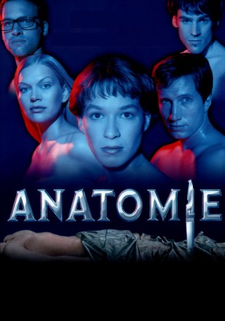

#3493 Anatomie
 
 IMDB-Wertung: 6.1 / 10
IMDB-Wertung: 6.1 / 10  Metascore: 0
Metascore: 0 
Für die ehrgeizige Medizinstudentin Paula geht ein Traum in Erfüllung: Sie wird zu einem Elitekurs in Anatomie bei dem ber��hmten Heidelberger Professor Grombek zugelassen. Doch die Freude wandelt sich schnell in jähes Entsetzen, als vor Paula auf dem Seziertisch ein junger Mann liegt, der tags zuvor noch quicklebendig war. Allen Warnungen zum Trotz stellt Paula Nachforschungen an und stößt schon bald auf einen mysteriösen Geheimbund, der in den Gemäuern des ehrwürdigen Instituts sein Unwesen treiben soll.
Jahr: 2000
Dauer: 99 Minuten
FSK: 16
Land: Deutschland Studio: Columbia TriStar FilmTonspuren:
Untertitel:
Auflösung: 1080p (1920x816) Größe: 9676 MB
Genre: Thriller, Horror
Regisseur: Stefan Ruzowitzky
Drehbuch: Niccolò Ammaniti
Soundtrack:
Darsteller:
 Franka Potente als Paula Henning
Franka Potente als Paula Henning Benno Fürmann als Hein
Benno Fürmann als Hein Sebastian Blomberg als Caspar
Sebastian Blomberg als Caspar Oliver Wnuk als Ludwig
Oliver Wnuk als Ludwig Arndt Schwering-Sohnrey als David
Arndt Schwering-Sohnrey als David- Andreas Guenther als Franz
 Simon Schwarz als Junger Mann
Simon Schwarz als Junger Mann- Christoph Hagen Dittmann als Bernie
- Anna Brüggemann als Junkie-Mädchen
 Anna Loos als Gretchen
Anna Loos als Gretchen- Holger Speckhahn als Phil
- Traugott Buhre als Prof. Grombek
- Antonia Cäcilia Holfelder als Gabi
 Rüdiger Vogler als Dr. Henning
Rüdiger Vogler als Dr. Henning- Barbara M. Ahren als Frau Henning
- Werner Dissel als Paulas Großvater
- Gennadi Vengerov als Präparator
- Thomas Meinhardt als Professor in München
- Alexander Liegl als Helfer
- Martin Pölcher als Helfer
- Berrin Alganer-Lenz als Putzfrau
- Angelika Sedlmeier als Frau Freisinger
- Ulrich Matschoss als Femerichter
- Alexander Held als Polizist
- Karl Friedrich als Kriminalbeamter
- Susanna Sandvoss als Kellnerin Heidelberg
- Johannes Nikolussi als Junkie
- Axel Weusten als Alexander
- Gabriel Bassale als Kursteilnehmer
- Ralf Dietl als Kursteilnehmer
- Oliver Engl als Kursteilnehmer
- Uche Ishionwu als Kursteilnehmer
- Michael Jank als Kursteilnehmer
- Thomas Neumann als Kursteilnehmer
- Armin Schlicht als Kursteilnehmer
- Christoph Schmeiduch als Kursteilnehmer
- Patrick Schmidt als Kursteilnehmer
- Nico Schütz als Kursteilnehmer
- Thijs van der Zee als Kursteilnehmer
- Michael Wölfl als Kursteilnehmer
- Jakob Claussen als Man in Train calling for a Doctor , uncredited
- Sabrina Setlur als Studentin in München , uncredited
Datei: X:\2-Dilogie(A-F)\Anatomie\Anatomie (2000, FSK16, 1920x816).mkv seit 17.04.2016
Festplatte: HD Collection-2(A-Z)-3(A-M)
 Alle Filme aus Gruppe '2-Dilogie(A-F)\Anatomie'
Alle Filme aus Gruppe '2-Dilogie(A-F)\Anatomie'